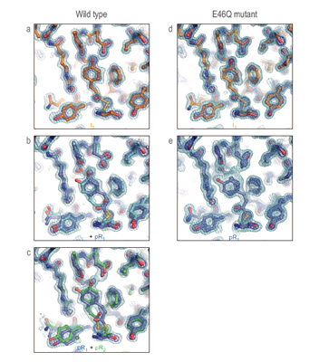

연구성과 10선
연구성과 10선
KAIST RESEARCH ACHIEVEMENTS
화학반응 중 단백질의 구조가 어떻게 변하는지 3차원으로 볼 수 있다!
화학과 이효철
요약
신약 개발에 있어 가장 중요한 요소 중 하나는 적합한 후보물질을 찾는 것이다. 이후 다양한 임상실험을 통해 많은 후보 물질들이 탈락하게 되는데 그러한 수고를 덜기 위해서는 최대한 목표 질병에 적합하다고 생각되는 후보물질을 찾는 것이다. 신약에 의한 치료도 생체내에서의 화학반응이기에 화학반응의 기작을 규명을 통해 완전한 전이상태의 3차원 구조를 밝히면 목표 질병에 더욱 최적화된 후보물질을 설계할 수 있다.
연구내용

화학 반응이 일어나려면 필연적으로 반응 물질의 구조 변화가 필요하다. 이런 구조 변화 과정 중 가장 불안정한 상태를 전이 상태라 한다. 화학반응 속도는 매우 빨라서 화학반응 중 전이상태의 완전한 원자 수준의 3차원 구조를 관찰하는 것은 불가능에 가깝다. 일반적으로 광이성질체화 반응의 전이는 1천조분의 1초(10-15초, 펨토초)란 짧은 시간동안 진행된다. 전이 상태의 구조를 안다면, 전이 상태를 안정화 시킬 수 있는 촉매나 효소를 디자인하여 반응을 빠르게 할 수도 있고, 반대로 원래 반응물보다 전이 상태에서 안정적인 반응 억제물을 만들어 반응을 억제할 수 있다.
 그림 2. 광반응 황단백질의 광이성질화 반응 중 중간구조를 나타낸 그림
단백질 결정내의 광이성질화 반응의 구조변화를 피코초 시간분해능의 엑스선 회절이미지를 얻어 이를 분석하여 결과를 도출했다.시분해 결정학으로 현재 가용한 가장 빠른 시간분해능인 피코초부터 수 마이크로초까지의 광반응 황단백질(Photoactive Yellow Protein)의 결정에 대한 시간 종속적(time-dependent) 회절이미지를 얻었다. 회절이미지는 다시 전자 밀도 지도(electron density map)로 변환한다. 이렇게 얻어진 시간 종속적인 전자 밀도 지도에서 행렬 기법 (Singular Value Decomposition; SVD)을 통해 시간 독립적인(time-independent) 전자 밀도 지도를 도출한 후 각 전자 밀도지도에 해당하는 중간 구조를 얻어냈다. 이를 기반으로 광이성질화 반응 경로를 규명했다.피코초 시간 분해능과 결정으로 얻은 3차원 공간 분해능을 통해 광이성질화 반응의 중간 구조 및 반응 경로를 확인했다.
 그림 3. 광반응 황단백질의 광이성질체화 반응 중 구조변화를 개념적으로 표현한 그림
그림 3. 광반응 황단백질의 광이성질체화 반응 중 구조변화를 개념적으로 표현한 그림
피코초대에 존재하는 첫 번째 중간 구조(IT)는 이성질화 반응의 중간 형태를 띄어서 전이상태로 간주된다. 일반적으로 전이상태는 불안정하지만 단백질 내에서는 수소결합같은 상호 작용이 존재해서 이러한 전이상태를 관찰할 수 있을 만큼 안정화되어 있다. 나노초대와 마이크로초대에 존재하는 두 번째, 세 번째 중간구조를 통해 광이성질화 반응 경로가 두 개의 다른 반응경로(자전거 페달 경로; bicycle pedal pathway와 훌라-트위스트 경로; hula-twist pathway)로 이루어 졌음을 규명했다. 두 개의 반응 경로에서는 단백질 내의 원자간 상호 작용 으로 인해 일반적인 이성질화 반응과 달리 공간 효율적인 움직임을 통해 이성질화가 진행된다.
돌연변이를 통해 전이상태 안정성에 관여하는 화학결합(수소결합)을 약화시켜 두 개의 반응 경로중 훌라-트위스트 경로만 존재할 수 있도록 제어할수 있었다.
기대효과
앞으로 차세대 가속기인 엑스선 자유전자 레이저를 통해 더 빠른 시간 분해능을 가지고 전이상태 이전의 구조도 규명할 수 있을 것이다. 이러한 화학반응의 초기 변화의 정확한 이해는 화학반응의 제어는 물론 치료, 신약 개발에 필요한 기초를 마련한 것으로 기대된다.
연구비 지원
ㆍ기초과학연구원(나노물질 및 화학반응 연구단)
ㆍ미래창조과학부와 한국연구재단 리더연구자지원사업-창의적연구
연구실적
ㆍY. O. Jung, J. H. Lee, J. Kim, M. Schmidt, K. Moffat, V. Srajer, H. Ihee*, Nature Chemistry, 5, 212-220(2013)